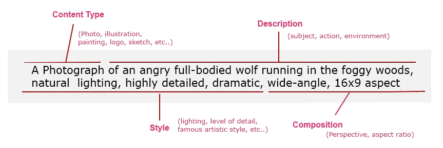

Navigating AI Tools
Action steps
Start a daily tool practice habit
Practice using one AI tool every day for a real-world task, such as drafting, summarizing, researching, or organizing information.
Focus on features and capabilities:
Examples:
- Try image generation
- Test web search mode
- Upload a document and analyze it
- Try AI coding assistance
- Explore voice interaction
Build a Personal AI Tool Directory
Create a document or spreadsheet tracking AI tools you discover.
Fields to Include:
- Tool name
- Primary purpose
- Best use cases
- Pricing
- Strengths
- Weaknesses
- Notes/examples
Curate a list of YouTube channels that demo tools
Search and subscribe to at least 5 channels that discuss and demo AI tools. These should be trusted content creators who speak to you.
Examples appear in the suggested resources below.
Suggested resources
Crafting Effective Prompts
Action steps
Use prompt frameworks
When writing prompts, follow a framework that works for you.
Then ask AI to elaborate on what you wrote to add more detail.
Write Better Prompt Framework (Role, Context, Task, Format)
"Summarize this report."
"Role: You are a strategy analyst. Context: This is a Q3 operations report for senior leadership. Task: Summarize the top 3 performance insights and 2 risks. Format: Use concise bullet points and include one recommended next action per risk."
Image prompting

Create a Prompt Library
Develop and document a set of reusable prompt templates that use specific personas and constraints to improve the effectiveness of your AI instructions.
You can use Google Keep, a Notes app, or vibe code your own prompt library tool.
Suggested Categories:
- Writing
- Research
- Brainstorming
- Images
- Coding
- Marketing
Practice Prompt Iteration
Improve a result through follow-up prompting instead of starting over.
Examples:
- “Make this shorter.”
- “Add examples.”
- “Rewrite for executives.”
- “Turn this into bullet points.”
Learn Prompt Sequencing
Break large tasks into smaller prompt chains.
Example Workflow:
- Brainstorm ideas
- Select best idea
- Create outline
- Draft content
- Edit tone
- Create final version
Suggested resources
Understanding AI Tool Capabilities & Limits
Action steps
Create Your AI Toolkit
For every AI task, use at least 2 AI tools at the same time.
Compare how each tool responds.
For Example (for text based tasks like brainstorming)
- Gemini
- Claude
- ChatGPT
Here is my current primary toolkit per capability:
- Claude Code - for everything
- Cursor - for IDE and Vibe coding
- Claude Opus 4.6 - Model preference
- NotebookLM - for research & learning
- MyMind - for curating content
- Gemini 3.1 Flash & pro Image - for visualizations
- Gemini Veo 3 - for video
- HeyGen - for avatars & video
- Sudo & Moises - for music exploration
- ChatGPT mobile app - for voice mode
Explore Multimodal Capabilities
Test tools beyond text.
Examples:
- Upload an image
- Upload a PDF
- Use voice interaction
- Generate visuals
- Analyze charts
Practice Output Formatting
Request outputs in specific structures.
Examples:
- Tables
- JSON
- Bullet lists
- Slide outlines
- Checklists
- CSV format
Decision framework
Selecting the right tool for the task
Building AI-Augmented Work Pipelines
Action steps
Chain Multiple AI Tasks Together
Use outputs from one AI task as inputs for another.
Example: Research → summarize → generate slides → create social posts
Combine Multiple AI Tools in One Workflow
Use specialized tools together.
Example stack:
- Research tool
- Writing assistant
- Image generator
- Automation platform
Connect Tools
Connect 2 tools so the output from one feeds directly into the other. Set up a simple automation using a no-code tool (Zapier, Make).
Examples:
- AI summary → Notion
- AI draft → Google Docs